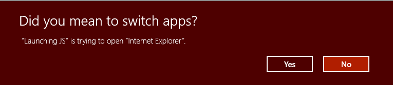
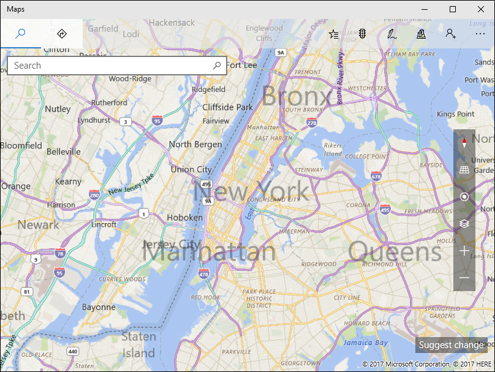

Launch the default Windows app for a URI
Learn how to launch the default app for a Uniform Resource Identifier (URI). URIs allow you to launch another app to perform a specific task. This topic also provides an overview of the many URI schemes built into Windows. You can launch custom URIs too. For more info about registering a custom URI scheme and handling URI activation, see Handle URI activation.
URI schemes let you open apps by clicking hyperlinks. Just as you can start a new email using mailto:, you can open the default web browser using http: or https:.
This topic describes the following URI schemes built into Windows:
| URI Scheme | Launches |
|---|---|
| http: and https: | Default web browser |
| mailto: | Default email app |
| microsoft-edge: | Microsoft Edge browser |
| ms-chat: | Messaging app |
| ms-people: | People app |
| ms-photos: | Photos app |
| ms-clicktodo: | Click to Do feature (part of Recall) |
| ms-settings: | Settings app |
| ms-store: | Store app |
| msnweather: | Weather app |
For example, the following URI opens the default browser and displays the Microsoft Bing web site: https://bing.com/.
You can also launch custom URI schemes too. If there is no app installed to handle that URI, you can recommend an app for the user to install. For more info, see Recommend an app if one is not available to handle the URI.
In general, your app can't select the app that is launched. The user determines which app is launched. More than one app can register to handle the same URI scheme. The exception to this is for reserved URI schemes. Registrations of reserved URI schemes are ignored. For the full list of reserved URI schemes, see Handle URI activation. In cases where more than one app may have registered the same URI scheme, your app can recommend a specific app to be launched. For more info, see Recommend an app if one is not available to handle the URI.
Important APIs
The following Windows Runtime (WinRT) APIs are used in this topic:
Note that many WinRT APIs will work with other desktop apps with package identity. There are some exceptions, and most of these are related to APIs that are specific to UI rendering or input. Some of the LauncherOptions, such as TreatAsUntrusted, only work in UWP apps. To read more about enabling your desktop app to work with WinRT APIs, see Call Windows Runtime APIs in desktop apps.
Call LaunchUriAsync to launch a URI
Use the LaunchUriAsync method to launch a URI. When you call this method, your app must be the foreground app, that is, it must be visible to the user. This requirement helps ensure that the user remains in control. To meet this requirement, make sure that you tie all URI launches directly to the UI of your app. The user must always take some action to initiate a URI launch. In a UWP app, if you attempt to launch a URI and your app isn't in the foreground, the launch will fail and your error callback will be invoked.
First create a System.Uri object to represent the URI, then pass that to the LaunchUriAsync method. Use the return result to see if the call succeeded, as shown in the following example.
private async void launchURI_Click(object sender, RoutedEventArgs e)
{
// The URI to launch
var bingUri = new Uri(@"https://www.bing.com");
// Launch the URI
var success = await Windows.System.Launcher.LaunchUriAsync(bingUri);
if (success)
{
// URI launched
}
else
{
// URI launch failed
}
}
In some cases, the operating system will prompt the user to see if they actually want to switch apps.

Important
This prompt is only supported by UWP apps. If Windows attempts to show this prompt for a desktop app, the launch will fail.
If your app is a UWP app, and you always want this prompt to occur, use the Windows.System.LauncherOptions.TreatAsUntrusted property to tell the operating system to display a warning.
// The URI to launch
var uriBing = new Uri(@"http://www.bing.com");
// Set the option to show a warning
var promptOptions = new Windows.System.LauncherOptions
{
TreatAsUntrusted = true
};
// Launch the URI
var success = await Windows.System.Launcher.LaunchUriAsync(uriBing, promptOptions);
Recommend an app if one is not available to handle the URI
In some cases, the user might not have an app installed to handle the URI that you are launching. By default, the operating system handles these cases by providing the user with a link to search for an appropriate app on the store. If you want to give the user a specific recommendation for which app to acquire in this scenario, you can do so by passing that recommendation along with the URI that you are launching.
Recommendations are also useful when more than one app has registered to handle a URI scheme. By recommending a specific app, Windows will open that app if it is already installed.
To make a recommendation, call the Windows.System.Launcher.LaunchUriAsync(Uri, LauncherOptions) method with LauncherOptions.preferredApplicationPackageFamilyName set to the package family name of the app in the store that you want to recommend. The operating system uses this info to replace the general option to search for an app in the store with a specific option to acquire the recommended app from the store.
// Set the recommended app
var options = new Windows.System.LauncherOptions
{
PreferredApplicationPackageFamilyName = "Contoso.URIApp_8wknc82po1e",
PreferredApplicationDisplayName = "Contoso URI App"
};
// Launch the URI and pass in the recommended app
// in case the user has no apps installed to handle the URI
var success = await Windows.System.Launcher.LaunchUriAsync(uriContoso, options);
Set remaining view preference
Important
This feature is only available in UWP apps. When used in a desktop app, the property will be ignored.
Source apps that call LaunchUriAsync can request that they remain on screen after a URI launch. By default, Windows attempts to share all available space equally between the source app and the target app that handles the URI. Source apps can use the DesiredRemainingView property to indicate to the operating system that they prefer their app window to take up more or less of the available space. DesiredRemainingView can also be used to indicate that the source app doesn't need to remain on screen after the URI launch and can be completely replaced by the target app. This property only specifies the preferred window size of the calling app. It doesn't specify the behavior of other apps that may happen to also be on screen at the same time.
Note
Windows takes into account multiple different factors when it determines the source app's final window size, for example, the preference of the source app, the number of apps on screen, the screen orientation, and so on. By setting DesiredRemainingView, you aren't guaranteed a specific windowing behavior for the source app.
// Set the desired remaining view.
var options = new Windows.System.LauncherOptions
{
DesiredRemainingView = Windows.UI.ViewManagement.ViewSizePreference.UseLess
};
// Launch the URI
var success = await Windows.System.Launcher.LaunchUriAsync(uriContoso, options);
URI Schemes
The various URI schemes are described in this section.
Email URI scheme
Use the mailto: URI scheme to launch the default mail app.
| URI Scheme | Results |
|---|---|
mailto: |
Launches the default email app. |
mailto:\[email address\] |
Launches the email app and creates a new message with the specified email address on the To line. Note that the email is not sent until the user taps send. |
HTTP URI scheme
Use the http: URI scheme to launch the default web browser.
| URI Scheme | Results |
|---|---|
http: or https: |
Launches the default web browser. |
Maps app URI schemes
Important
The Windows Maps app is deprecated and will be removed from the Microsoft Store by July 2025. At this time, there will also be a final update to the app from the Store that makes it nonfunctional. If you remove the app before July 2025, you can still reinstall it from the Store, but past July 2025 you won't be able to reinstall it.
For more information, see Resources for deprecated features - Maps app.
Use the bingmaps:, ms-drive-to:, and ms-walk-to: URI schemes to launch the Windows Maps app to specific maps, directions, and search results. For example, the following URI opens the Windows Maps app and displays a map centered over New York City.
bingmaps:?cp=40.726966~-74.006076

To use the map control in your UWP app, see Display maps with 2D, 3D, and Streetside views. If you're using Windows App SDK 1.5 or later in a WinUI app or other desktop app, you can use the MapControl.
Messaging app URI scheme
Use the ms-chat: URI scheme to launch the Microsoft Messaging app.
| URI scheme | Results |
|---|---|
ms-chat: |
Launches the Messaging app. |
ms-chat:?ContactID={contacted} |
Allows the messaging application to be launched with a particular contact’s information. |
ms-chat:?Body={body} |
Allows the messaging application to be launched with a string to use as the content of the message. |
ms-chat:?Addresses={address}&Body={body} |
Allows the messaging application to be launched with a particular addresses' information, and with a string to use as the content of the message. Note: Addresses can be concatenated. |
ms-chat:?TransportId={transportId} |
Allows the messaging application to be launched with a particular transport ID. |
People app URI scheme
Use the ms-people: URI scheme to launch the People app. For more info, see Launch the People app.
Important
The People app is moving to the new Outlook. You can take your contacts with you by selecting Export contacts on the People app's toolbar and then importing them into the new Outlook. See Manage your contacts and connect with people through the new Outlook for Windows (Preview) for more information.
Photos app URI scheme
Use the ms-photos: URI scheme to launch the Photos app to view an image or edit a video. For example:
| Operation | URI |
|---|---|
| View an image | ms-photos:viewer?fileName=c:\users\userName\Pictures\image.jpg |
| Edit a video | ms-photos:videoedit?InputToken=123abc&Action=Trim&StartTime=01:02:03 |
Note
If you are launching the Photos app from a UWP app, the URIs to edit a video or display an image are only available on desktop.
The following table lists additional supported URI schemes for the Photos app:
| URI scheme | Results |
|---|---|
ms-photos:viewer?fileName={filename} |
Launches the Photos app to view the specified image where {filename} is a fully-qualified path name. For example: c:\users\userName\Pictures\ImageToView.jpg |
ms-photos:videoedit?InputToken={input token} |
Launches the Photos app in video editing mode for the file represented by the file token. InputToken is required. Use the SharedStorageAccessManager to get a token for a file. |
ms-photos:videoedit?Action={action} |
A parameter that indicates which video editing mode to open the Photos app in, where {action} is one of: SlowMotion, FrameExtraction, Trim, View, Ink. Action is required. |
ms-photos:videoedit?StartTime={timespan} |
An optional parameter that specifies where to start playing the video. {timespan} must be in the format "hh:mm:ss.ffff". If not specified, defaults to 00:00:00.0000 |
Settings app URI scheme
Use the ms-settings: URI scheme to launch the Windows Settings app. Launching to the Settings app is an important part of writing a privacy-aware app. If your app can't access a sensitive resource, we recommend providing the user a convenient link to the privacy settings for that resource.
For example, the following URI opens the Settings app and displays the camera privacy settings:
ms-settings:privacy-webcam

For more info, see Launch the Windows Settings app and Security and identity.
Store app URI scheme
Use the ms-windows-store: URI scheme to launch the Microsoft Store app. Open product detail pages, product review pages, and search pages, etc. For example, the following URI opens the Microsoft Store app and launches the home page of the Store.
ms-windows-store://home/
For more info, see Using ms-windows-store URIs.
Weather app URI scheme
Use the msnweather: URI scheme to launch the Weather app.
| URI Scheme | Results |
|---|---|
msnweather://forecast?la=\[latitude\]&lo=\[longitude\] |
Launches the Weather app in the Forecast page based on a location geographic coordinates.latitude refers to the latitude of the location.longitude refers to the longitude of the location. |
Microsoft Edge URI scheme
Use the microsoft-edge: URI scheme to launch the Microsoft Edge browser to a specified URL.
| URI Scheme | Results |
|---|---|
microsoft-edge:https://example.com/ |
Opens the Microsoft Edge browser and navigates to https://example.com/ |
You can use this URI scheme to launch the Microsoft Edge browser, regardless of the user's default browser setting.